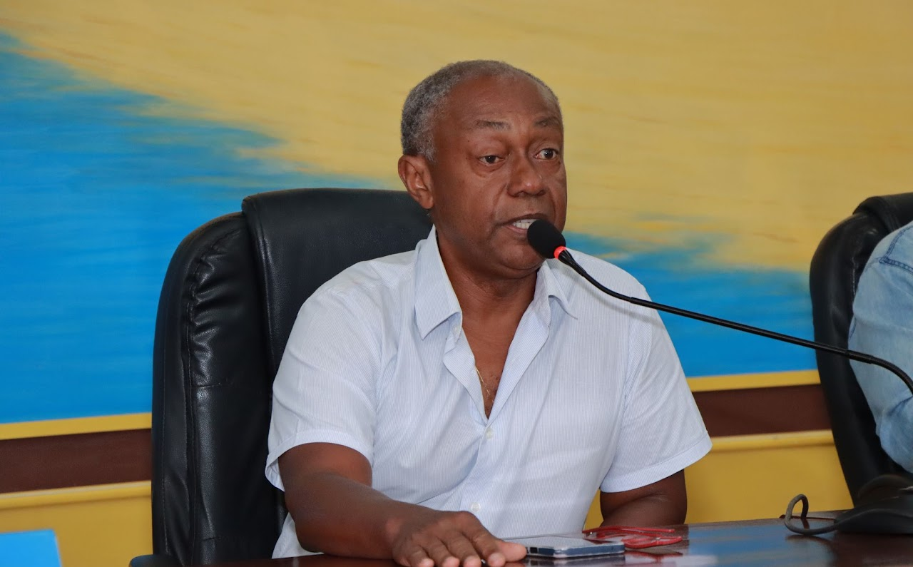

Colaboradores

Professor Dr. Wilson Sabino
Instituto de Saúde Coletiva (ISCO) - UFOPA
Currículo LattesPossui graduação de Bacharel em Química pela Universidade Santa Cecília (1993), graduação em Farmácia pela Universidade Católica de Santos (1998), Mestrado (2001) e Doutorado (2004) pelo departamento de Medicina Preventiva e Saúde Pública na Universidade Autônoma de Madrid (UAM).

Mauricio Bigolin
**************************
Currículo LattesEngenheiro Agrônomo formado pela UFSM, durante a graduação desenvolveu pesquisas na Área de Produção Vegetal com ênfase em Entomologia Agrícola no grupo de pesquisa do Laboratório de Manejo Integrado de Pragas (LabMIP) vinculado a Universidade Federal de Santa Maria/RS.
voluntarios
.png)
Marielle Vincente Lima
Quilombola: Quilombo Peafú
Curso: Farmácia
João da Silva
Quilombola: Quilombo X
Curso: Biologia
Maria Souza
Quilombola: Quilombo Y
Curso: Enfermagem
José Oliveira
Quilombola: Quilombo Z
Curso: Medicina
João da Silva
Quilombola: Quilombo X
Curso: Biologia
João da Silva
Quilombola: Quilombo X
Curso: Biologia
João da Silva
Quilombola: Quilombo X
Curso: Biologia
João da Silva
Quilombola: Quilombo X
Curso: Biologia
João da Silva
Quilombola: Quilombo X
Curso: Biologia